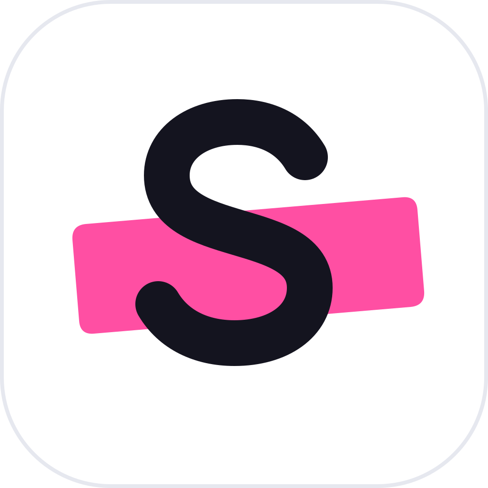

Kéo chuột
Bôi đen rồi bấm biểu tượng
Kéo chuột, nhấp đúp vào một từ hoặc nhấp ba lần vào một đoạn. Một biểu tượng nhỏ hiện cạnh con trỏ; bấm vào đó để xem bản dịch. Không bấm thì nó tự biến mất.

Quick Translate Tải vềPhần mềm dịch cho Windows và macOS
Đang đọc email, PDF hay một đoạn chat tiếng Anh? Bôi đen đoạn cần hiểu, bản dịch hiện ngay bên dưới. Không phải chuyển cửa sổ, không phải sao chép sang trình duyệt.
Miễn phí, mã nguồn mở. Không cần tài khoản.
Bôi đen một đoạn văn bản, bấm biểu tượng vừa hiện ra, bản dịch nằm ngay bên dưới.
Chọn cách hợp với việc bạn đang làm. Cả ba đều giữ nguyên vùng bôi đen và trả lại clipboard như cũ.
Kéo chuột
Kéo chuột, nhấp đúp vào một từ hoặc nhấp ba lần vào một đoạn. Một biểu tượng nhỏ hiện cạnh con trỏ; bấm vào đó để xem bản dịch. Không bấm thì nó tự biến mất.
AltQ
Bôi đen bằng bàn phím rồi nhấn phím tắt. Bạn đổi được tổ hợp phím trong Cài đặt nếu nó trùng với phần mềm khác.
AltW
Dành cho chữ không bôi đen được: ảnh chụp, PDF scan, video đang dừng. Kéo một hình chữ nhật quanh chữ, ứng dụng nhận dạng rồi dịch.
Nhấp đúp vào một từ tiếng Anh, popup cho bạn nghĩa tiếng Việt xếp theo từ loại, phiên âm, và định nghĩa bằng tiếng Anh. Muốn đọc kỹ hơn, có nút mở thẳng mục từ đó trên Cambridge hoặc Oxford Learner’s.
Trong popup, mỗi từ của câu gốc đều bấm được. Gặp một từ lạ giữa câu, bấm vào nó để tra riêng mà không cần bôi đen lại.
attend /əˈtend/
Cambridge · Oxford Learner’s
Quick Translate thử lần lượt ba nguồn dịch. Bạn không cần cấu hình gì để hai nguồn đầu hoạt động.
Mặc định khi có mạng. Không cần tài khoản, không cần API key.
Khi mất mạng hoặc Google không phản hồi, ứng dụng tự chuyển sang model Opus-MT đã tải sẵn. Văn bản không rời khỏi máy. Mỗi chiều dịch nặng khoảng 107 MB, tải một lần trong Cài đặt.
Chỉ dùng khi bạn tự nhập API key. Hợp với câu dài cần văn phong tự nhiên hơn; hoàn toàn không bắt buộc.
Ứng dụng không có máy chủ riêng, không yêu cầu đăng nhập và không gửi số liệu sử dụng về đâu cả. Mã nguồn công khai trên GitHub để bất kỳ ai cũng kiểm tra được.
Bản mới nhất, miễn phí theo giấy phép MIT.
Windows 10 hoặc 11, 64-bit. Đầy đủ tính năng: bôi đen, phím tắt, OCR, rê chuột để tra từ.
Tải cho WindowsmacOS 11 trở lên, máy chip Apple (M1 trở đi). Có bôi đen để dịch, phím tắt, quét chữ trên màn hình và dịch thời gian thực; rê chuột để dịch chưa có trên macOS.
Tải cho macOSBộ cài chưa có chữ ký số trả phí nên hệ điều hành sẽ hỏi lại khi mở lần đầu. Xem hướng dẫn cài đặt, mã SHA-256 và các bản trước.
Có. Ứng dụng miễn phí và mã nguồn mở theo giấy phép MIT. Dịch bằng Google và dịch offline đều không cần tài khoản hay API key.
Được, sau khi bạn tải model offline trong Cài đặt → Engine dịch (khoảng 107 MB cho mỗi chiều). Khi mất mạng, ứng dụng tự chuyển sang dịch trên máy và ghi chú điều đó trong popup.
Mọi ứng dụng cho phép bôi đen và sao chép văn bản: trình duyệt, Word, trình đọc PDF, Claude, Slack, Zalo, VS Code. Với ảnh hoặc PDF scan, dùng chế độ quét vùng màn hình.
Khi online, ứng dụng dịch được các ngôn ngữ Google Translate hỗ trợ và tự nhận ngôn ngữ nguồn. Mặc định là Anh ↔ Việt: gặp tiếng Việt thì dịch sang tiếng Anh, còn lại dịch sang tiếng Việt. Dịch offline hiện có các cặp đi qua tiếng Anh như Việt, Nhật, Trung, Pháp, Đức.
Khi dịch online, đoạn văn bản được gửi tới dịch vụ dịch bạn chọn. Khi dịch offline, nó không rời khỏi máy. Ứng dụng không có máy chủ riêng và không thu thập dữ liệu.
Vì bộ cài chưa được ký bằng chứng chỉ trả phí. Trang tài liệu hướng dẫn từng bước và cách đối chiếu mã SHA-256 của tệp tải về.